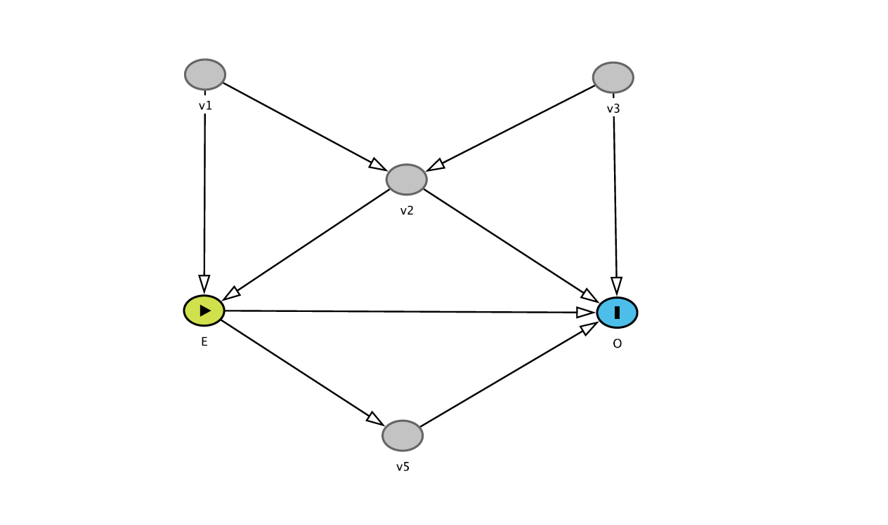
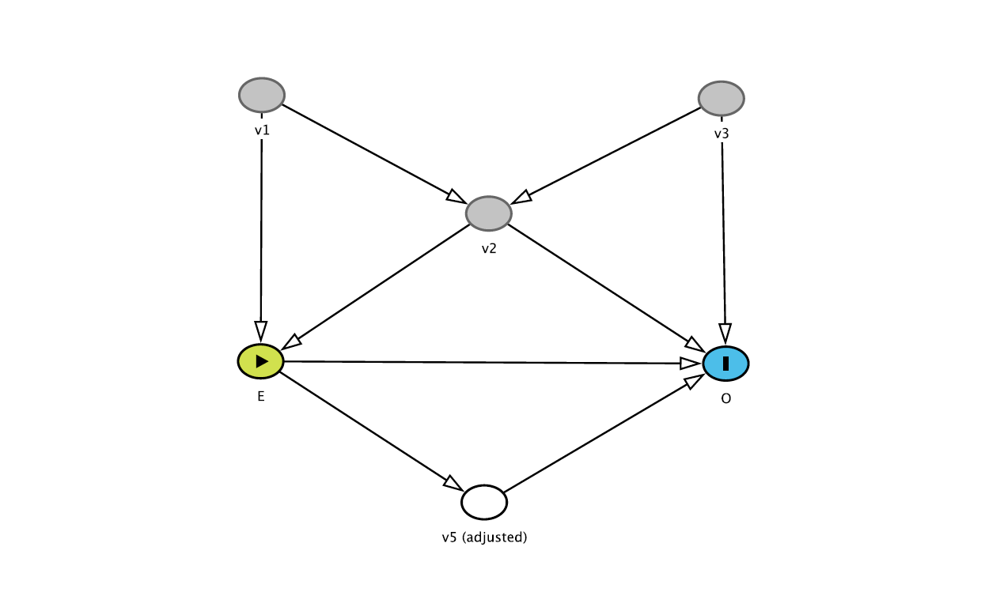
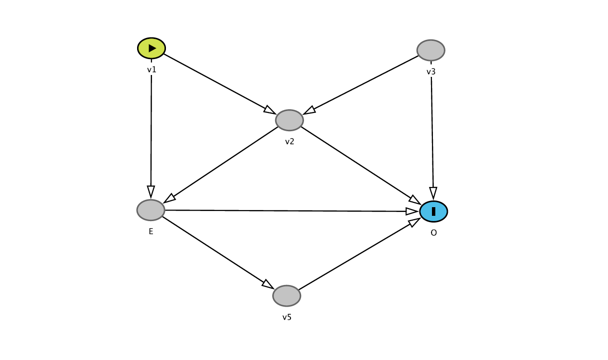
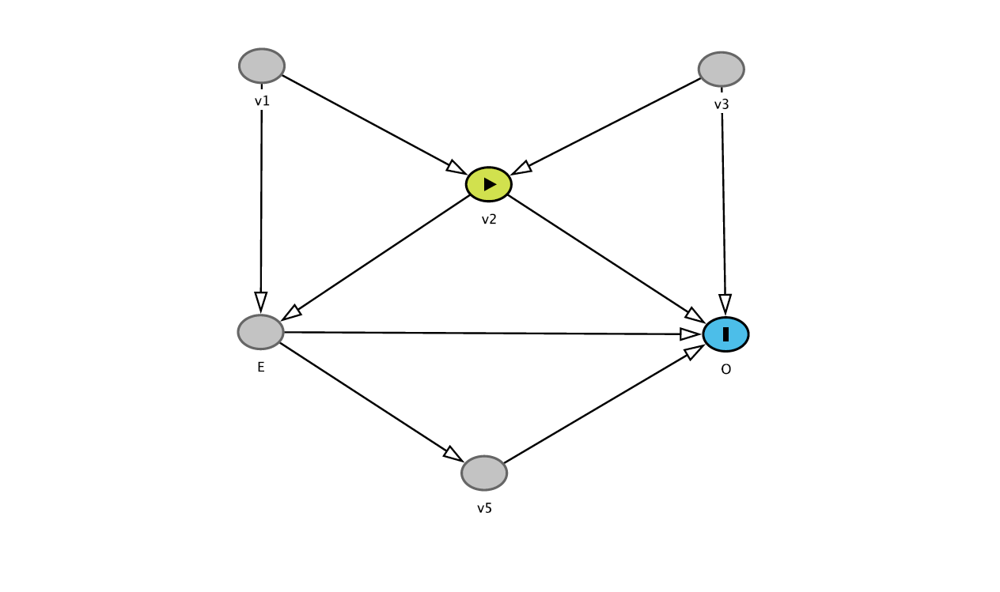
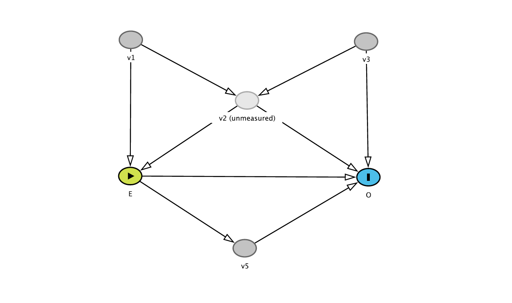
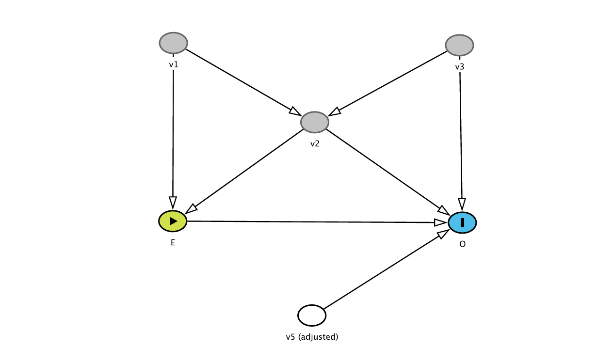

library(haven)
library(dplyr)
library(ggplot2)
library(emmeans)
library(car)
library(MASS)
whas500 <- read_sav("whas500.sav")
whas500 <- whas500 |> mutate(across(where(is.labelled), as_factor))Medical Statistics – Lab 8
R version
Welcome to lab 8. In this lab, we will practice estimated marginal means in a two-way ANOVA, build prediction models using backward elimination and automated procedures, and reason with causal diagrams (DAGs).
We will use the Worcester Heart Attack Study dataset (whas500.sav, available from the Datasets menu). The dataset includes data from 500 patients admitted with acute myocardial infarction in Worcester, Massachusetts in 1997, 1999, and 2001.
Key variables in the dataset include:
los: Length of hospital stay (days, continuous outcome)age: Age at hospital admission (years)gender: Gender (0 = Male, 1 = Female)hr: Initial heart rate (beats per minute)sysbpanddiasbp: Initial systolic and diastolic blood pressure (mmHg)bmi: Body mass index (kg/m^2)cvd: Presence of cardiovascular disease (0 = No, 1 = Yes)chf: Congestive heart complications (0 = No, 1 = Yes)sho: Presence of cardiogenic shock (0 = No, 1 = Yes)
We will use the following R packages: haven, dplyr, ggplot2, emmeans, car, and MASS.
Part 1: Estimated marginal means in a two-way ANOVA
In the lecture, we discussed estimated marginal means in the context of one-way and two-way ANOVA. In this first exercise, we will use a two-way ANOVA to study hospital length of stay (los) in the WHAS500 dataset.
We will use:
- outcome:
los, length of hospital stay in days; - factor 1:
gender; - factor 2:
chf, congestive heart complications.
Exploratory plot
Before fitting the model, make an interaction plot of the mean length of stay by chf, with separate lines for gender.
whas500 |>
group_by(gender, chf) |>
summarise(
mean_los = mean(los, na.rm = TRUE),
.groups = "drop"
) |>
ggplot(aes(x = chf, y = mean_los, group = gender, color = gender)) +
geom_point(size = 3) +
geom_line() +
labs(
x = "Congestive heart complications",
y = "Mean length of stay (days)",
color = "Gender"
)Two-way ANOVA model
Fit a two-way ANOVA model with los as the outcome and gender, chf, and their interaction as predictors.
fit_emm <- lm(los ~ gender * chf, data = whas500)
anova(fit_emm)Estimated marginal means
Use estimated marginal means to interpret the model.
emmeans(fit_emm, ~ gender)
emmeans(fit_emm, ~ chf)
emmeans(fit_emm, ~ gender * chf)
# Contrast tests for the main effects
pairs(emmeans(fit_emm, ~ gender))
pairs(emmeans(fit_emm, ~ chf))
# Contrast tests for simple effects
pairs(emmeans(fit_emm, ~ chf | gender))
pairs(emmeans(fit_emm, ~ gender | chf))
Note
If the interaction term is statistically significant, it usually makes sense to examine simple effects, for example the effect of CHF separately within males and females. If the interaction is not statistically significant, we usually do not focus on formal simple-effects tests. Instead, we interpret the main effects and their estimated marginal means, while using the interaction plot and the cell means descriptively.
Part 2: Building prediction models using backward elimination
In this part of the lab, we will build a prediction model for hospital length of stay (los) in patients with acute myocardial infarction.
Step 1: Fit the initial linear regression model
Fit an initial linear regression model for hospital length of stay (los) using lm() with predictors age, gender, hr, sysbp, diasbp, bmi, cvd, and sho. Summarize the model output to inspect coefficients and p-values.
Step 2: Eliminate the least significant predictor
To identify the least significant predictor, we use the Type III ANOVA table:
- Significance threshold: \(p > 0.10\)
- Remove the predictor with the largest p-value above this threshold.
Use the Anova() function from the car package to obtain the Type III ANOVA table (see lab week 6).
Step 3: Repeat the steps
Iteratively remove the least significant predictor until all predictors have \(p < 0.10\). At each step:
- Rerun the regression model
- Generate the Type III ANOVA table
- Remove the least significant predictor
Step 4: Final model
Present the final linear regression model:
- Report the final model, including regression coefficients and 95% CIs.
- Create residual plots to assess the model assumptions (normality, homoscedasticity, linearity).
Tip95% CIs for regression coefficients
To obtain 95% CIs for the regression coefficients after fitting your final model (e.g., fit <- lm(...)), use:
confint(fit)Part 3: Automated procedures for building prediction models (logistic regression)
In this part, we explore automated procedures for predictor selection in logistic regression prediction models. We use the same WHAS dataset but now focus on predicting in-hospital death (dstat: alive/dead) from candidate predictors.
Automated model selection (AIC)
stepAIC() from the MASS package can be used for automated selection based on AIC. Because AIC compares overall model fit (not individual p-values), the selected model may differ from manual backward elimination.
# Create a 0/1 outcome (1 = dead)
whas500 <- whas500 |>
mutate(dstat01 = ifelse(dstat == "dead", 1, 0))
fit_full <- glm(
dstat01 ~ age + gender + hr + sysbp + diasbp + bmi + cvd + sho,
family = binomial,
data = whas500
)
fit_step <- stepAIC(fit_full, direction = "backward", trace = FALSE)
summary(fit_step)
TipReporting odds ratios (ORs) and 95% CIs
For logistic regression, summary() reports regression coefficients on the log-odds scale. For reporting, it is often more useful to report odds ratios (ORs) with 95% confidence intervals (CIs).
You can compute these from the summary() output (Wald CI):
s <- summary(fit_step)$coefficients
OR <- exp(s[, "Estimate"])
CI_lower <- exp(s[, "Estimate"] - 1.96 * s[, "Std. Error"])
CI_upper <- exp(s[, "Estimate"] + 1.96 * s[, "Std. Error"])
cbind(OR = OR, CI_lower = CI_lower, CI_upper = CI_upper)Or compute them more directly by exponentiating the coefficient confidence intervals:
exp(cbind(OR = coef(fit_step), confint.default(fit_step)))Part 4: Causal diagrams
In the lecture, we introduced the main DAG concepts: causal paths, confounding, mediation, and colliders. In this lab, we will turn those concepts into a practical procedure for deciding which variables to adjust for when estimating a causal effect.
Key terms
A DAG is a directed acyclic graph: a diagram with variables as nodes and arrows representing assumed causal effects. “Acyclic” means that the arrows do not form a loop back to the same variable.
A path is any route through the diagram that connects two variables. Importantly, a path does not have to follow the direction of the arrows. For example, if the diagram contains:
E <- C -> Othen E - C - O is a path between E and O, even though one arrow points into E and one arrow points into O.
A causal path from exposure to outcome is a path where all arrows point forward from the exposure to the outcome. For example:
E -> M -> Ois a causal path from E to O.
A mediator lies on a causal path from exposure to outcome. If we adjust for a mediator, we block part of the causal effect. Therefore, if we want the total effect of the exposure, we usually should not adjust for mediators.
A confounder is a common cause of the exposure and the outcome. A confounder creates a non-causal path between exposure and outcome. Adjusting for confounders can help remove confounding.
A collider is a variable that is caused by two other variables on a path, for example:
E -> C <- OA path through a collider is normally blocked. However, adjusting for a collider, or for a descendant of a collider, can open the path and introduce bias.
Recipe for detecting and correcting for confounding
Suppose we are interested in the effect of an exposure E on an outcome O.
Step 1. Identify the effect of interest
First decide which causal effect you want to estimate. In this lab, we are usually interested in the total effect of the exposure on the outcome.
This matters because the same variable can play different roles depending on the effect of interest. A variable may be a confounder for one effect, but a mediator or irrelevant variable for another effect.
Step 2. Inspect the paths between exposure and outcome
Look for all paths connecting E and O. Remember: paths do not have to follow the direction of the arrows.
Separate these into:
- causal paths from E to O, where all arrows point forward from exposure to outcome;
- non-causal paths, which may create confounding.
Step 3. Decide which paths should remain open
If we want the total effect of E on O, the causal paths from E to O should remain open. We should therefore avoid adjusting for mediators on these paths.
Step 4. Decide which paths should be blocked
Non-causal paths between E and O may create confounding. These paths should be blocked by adjusting for appropriate variables.
As a practical rule:
- adjust for common causes of the exposure and outcome;
- do not adjust for mediators if the goal is the total effect;
- do not adjust for colliders, because this can open a path that was previously blocked.
Step 5. Check the adjustment set
The aim is not to adjust for as many variables as possible. The aim is to choose a sufficient adjustment set: variables that block confounding paths without blocking the causal effect of interest or opening new biasing paths.
After reasoning through the DAG by hand, you can use DAGitty to check your answer.
Checking DAGs with DAGitty
DAGitty is a webtool for drawing and checking causal diagrams. In this lab, we will use it as a second step after reasoning through the diagram ourselves. DAGitty can help identify possible adjustment sets for a chosen exposure and outcome, but its answer depends entirely on the DAG you enter. If the arrows in the DAG do not reflect the causal assumptions you want to make, the suggested adjustment set will not be meaningful.
For these exercises, use DAGitty to:
- draw or inspect the DAG;
- set the exposure and outcome;
- compare DAGitty’s suggested adjustment set with your own reasoning.
For each of the exercises below:
- First solve the diagram by hand using the recipe above.
- Pay special attention to the meaning of a path: a path connects variables, but does not have to follow the direction of the arrows.
- Then check your answer using the DAGitty webtool.
Exercise 1
In the graph depicted below, for which variables do you need to adjust to assess the unconfounded effect of E on O (there may be several possibilities)?

Exercise 2
In the graph depicted below, what happens when you additionally adjust for v5?

Exercise 3
This diagram is slightly different: v1 now is the exposure. For which variables do you need to adjust to assess the unconfounded effect of v1 on O?

Exercise 4
Now, v2 is the exposure. For which variables do you need to adjust to assess the total unconfounded effect of v2 on O?

Exercise 5
Back to the first DAG. However, v2 is now unmeasured. Can we still obtain an unconfounded estimate of the effect of E on O?

Exercise 6
See the DAG below: you adjusted for v5. What would be the consequence of this action?
